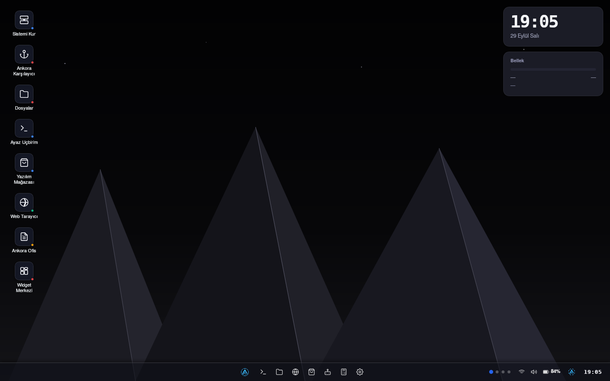

Sade. Hızlı.
Size ait.
Ankora Linux, açılışta yalnızca gerekeni çalıştıran, tamamı Türkçe konuşan ve kendi masaüstü ortamı Ayaz ile gelen bir işletim sistemi. Eski bilgisayarınıza da, günlük iş makinenize de aynı özeni gösterir.
Ücretsiz • GPL-3.0 açık kaynak • Test sürümü — geri bildirimlerinizle gelişiyor

AyazDE 2.0 test sürümünden gerçek ekran görüntüsü — Dosyalar, Paket Yöneticisi ve USB yazıcı açıkken.
Bilgisayar dediğin, ne yaptığını anlatır.
Üç karar verdik ve üçünde de ısrarcıyız: açılış şeffaf olacak, masaüstü bize ait olacak, ekrandaki her sayı doğru olacak.
Şeffaf açılış
systemd yok. Numaralı SysVinit betikleri sırayla çalışır; /etc/rc2.d içine bakıp neyin çalıştığını görürsünüz.
Bize ait masaüstü
Ayaz; Rust + Tauri 1.5 + WebKitGTK ile yazıldı, pencereleri openbox yönetiyor. Başkasının temasını giymiyor.
Ayaz'ı tanıyın →Dürüst göstergeler
Pil yoksa rozet gizlenir, Wi-Fi yoksa liste boş gelir. Uydurma yüzde, sahte grafik yok.
Sürüm notları →Tema değil, ortam.
Panel, başlat menüsü, sistem tepsisi, bildirimler ve ayarlar tek parça. Menüden hata mesajına kadar her metin Türkçe. Üç sakin tema arasında tek tıkla geçin.
- Çekirdek Rust, çatı Tauri 1.5, arayüz WebKitGTK
- Pencere yöneticisi openbox — pencere artsa da RAM erimez
- Ağ ve Bluetooth yönetimi nmcli ile, gerçek tarama
OS: Ankora Linux 2.0 (AyazDE) x86_64
Base: Devuan / Debian deposu
Kernel: 6.8.0-ankora-generic
DE: Ayaz (openbox + Tauri 1.5)
Init: SysVinit • Shell: bash
Dil: Türkçe • Lisans: GPL-3.0
İki sürüm, net iş.
Ev ve ofis için Ayaz masaüstlü son kullanıcı sürümü; BT sınıfları ve Faz tahtalar için XFCE tabanlı okul sürümü. Taban ikisinde de aynı: Devuan + SysVinit.
ayazdemas.pngSon Kullanıcı
2.0 AyazDE • test sürümüKendi Ayaz masaüstü, AI asistanı ve mağazayla günlük bilgisayar.
ayazdeokul.png
Okul
XFCE tabanlı • yakında çıkacakHafif, kilitli profilli, tek imajdan toplu kurulan sınıf sistemi.
Eski dostlara da, yeni makinelere de.
Animasyonla vakit kaybettirmeyen masaüstü ve yalnızca gerekli servislerle eski donanımda akıcı; Debian alışkanlıklarıyla yeni makinede tanıdık.
"Kurulumdan sonra açılışta neyin çalıştığını ilk kez gerçekten görebildim. rc2.d klasörü her şeyi anlatıyor."
"2014 laptop canlandı. Boşta bellek tüketimi beklediğimden düşük, menülerin tamamı Türkçe."
"Ayaz'ın görev yöneticisine güvendim: gösterdiği değerlerle uçbirimdeki değerler aynı."
Önce deneyin, sonra karar verin.
USB'ye yazdırın, kurmadan canlı kullanın. Beğenirseniz aynı ortamdan kurun. SHA256 özeti her imajın yanında.